Guesses that have to become facts
Your business idea is only as good as the number of customers who are willing to pay for it. You must solve a real pain or provide a real gain for the customer. You also have to quantify that pain or gain in money, because the number helps you determine the price of your product.
The biggest mistake many aspiring entrepreneurs make is to assume they know exactly what the customer wants and to build a product on that perception. When you have identified a need in the market, validate the assumption by talking to potential customers. At the start your business idea is a bunch of guesses, and you must turn those guesses into facts. You have to go out of the building and talk to real people about their needs.

The beachhead market
Before you go out, decide who the most likely target group for your product is. There may be several potential customer segments. Focus on the most accessible one.
The lecture defines a beachhead market as a market segment in which customers are eager to buy your product and which foreshadows other market segments for the future.

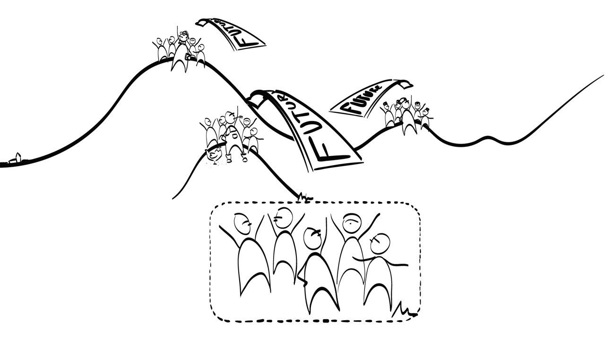
Persona and pivoting
Once you have a beachhead market, sketch out a persona: a person who has all the demographic and social characteristics of a typical customer in that market. Then find real-life examples of your persona and talk to them about their needs in relation to your product.

Will your initial assumptions hold up, or do you have to modify them because of what these people tell you? This is an iterative process called pivoting. The product specifications are adjusted until they match the real customer needs.

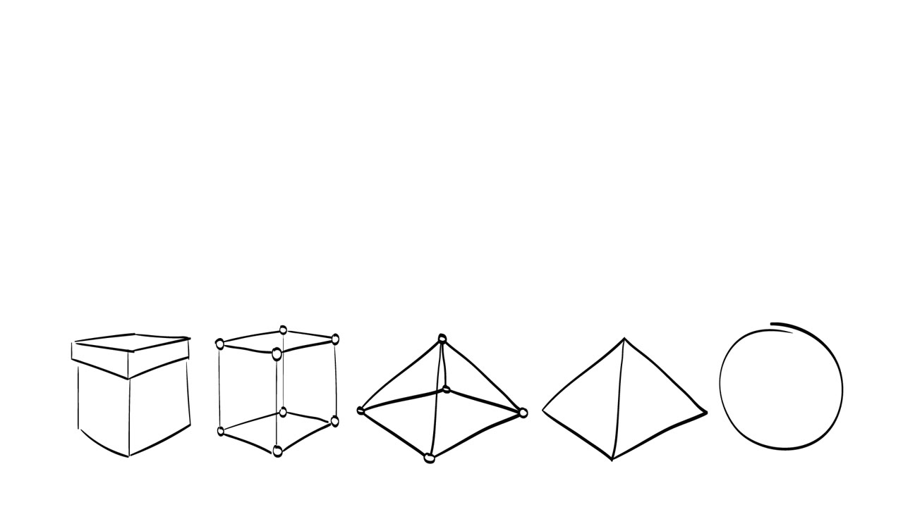
Be prepared for the customer needs to turn out quite different from your original idea. A totally different product may be required to satisfy them. After this product-market fitting process, verify that the pivoted solution is still a business idea that you can pursue and want to pursue.
How big is the market?
When your product idea matches the expectations of your persona, two issues remain:
- How many customers does your persona represent? In other words, how big is your beachhead market?
- What are they willing to pay for your product?

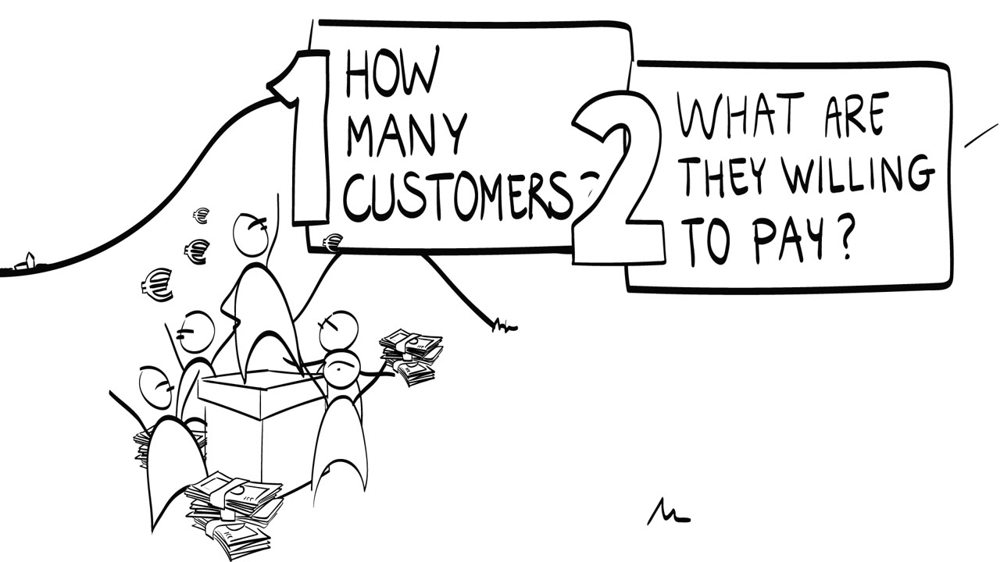
Make sure the needs of your persona are still representative of the beachhead market. If they are not, you may have drifted from a mainstream market toward a niche market while pivoting. Some niche markets are highly profitable, but it is usually better to focus on a broader segment.
Remember too that the total addressable market you believe you have found is one thing, and the fraction of it that is willing to buy your product is another. The difference is big.

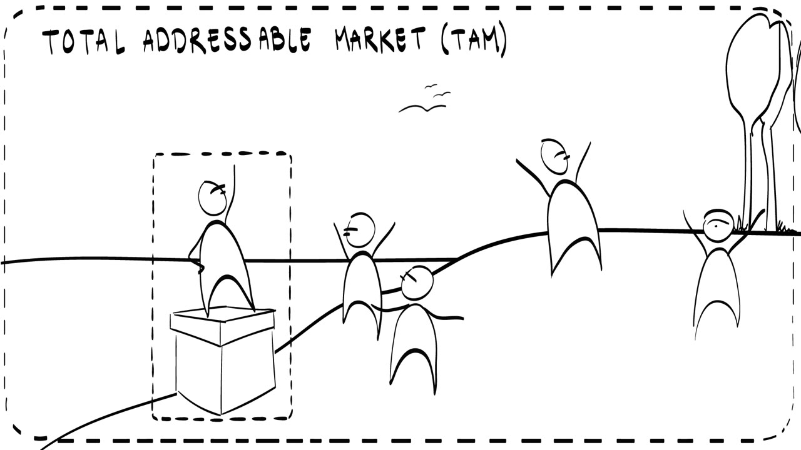
Determining the total addressable market is already quite a challenge. Estimating your piece of that pie is harder. So proceed very cautiously in the beginning and discover one customer at a time, until you have found 10 real customers, then 20, then 50, then 100, and so on. If the beachhead market is large enough, you can go on to the price.
Price by the pain, not by the cost
Pricing is tricky and depends on a number of factors. Of course the price customers are willing to pay should be significantly higher than what it costs you to produce the product, with all the necessary overhead included.
But the customer price should never be based on your cost price. A pricing strategy such as cost price plus 50% is meaningless. The correct approach is to relate the price directly to the pain the product relieves or the gain it provides.

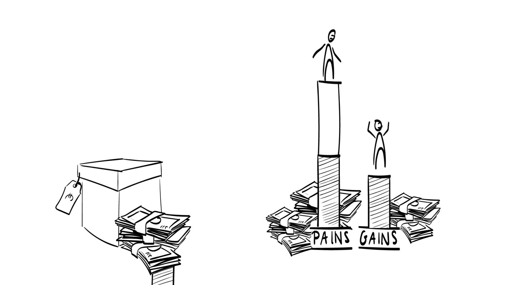
The example is a dripping faucet in your bathroom. You are probably very anxious to get it fixed. The little rubber ring you need costs perhaps one euro cent or less to make. But you are a customer in pain, because a dripping faucet is really annoying, especially at night. You are more than willing to pay one euro fifty for the replacement ring. That is 150 times the cost price.

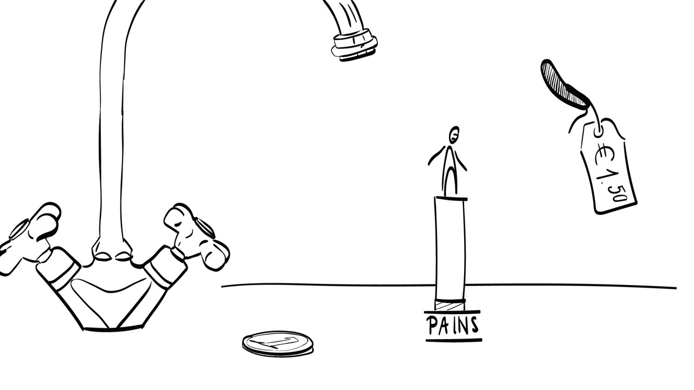
What else moves the price
Two other factors influence the price. One is competition: what alternatives are there, and how are they priced? The other is your unique selling points: is your solution special in any way, and is that worth the extra money?
Many products become considerably cheaper over time. Other suppliers enter the market with identical or similar products, and pricing becomes an important instrument in the battle over market share. After the segment of early adopters has been saturated, the best way to reach the majority market is to offer the product at a lower price. Many people do not buy a new product simply because it is too expensive for them. Fortunately, at this stage economies of scale kick in and drive down the cost price.

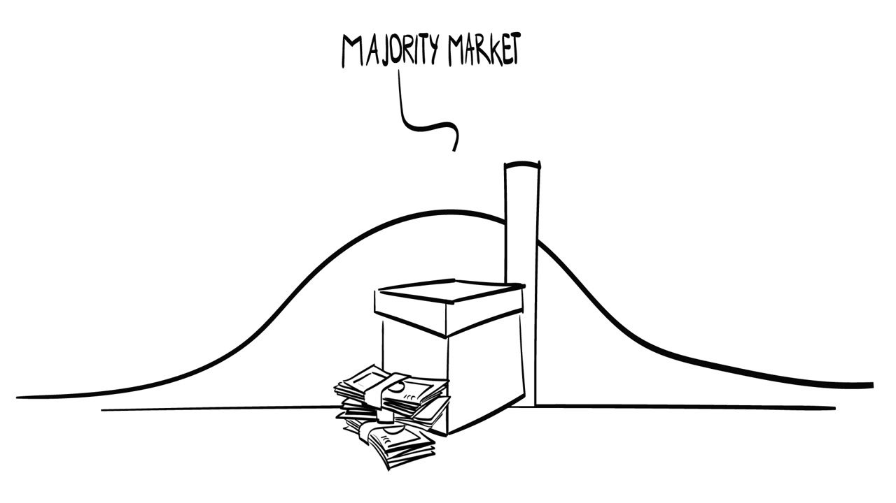
Smaller, simpler or stripped-down versions of the product can also fill the low-budget end of the market. When Apple introduced the iPad mini, it was a smaller and more portable iPad. To many people it was also an affordable iPad.

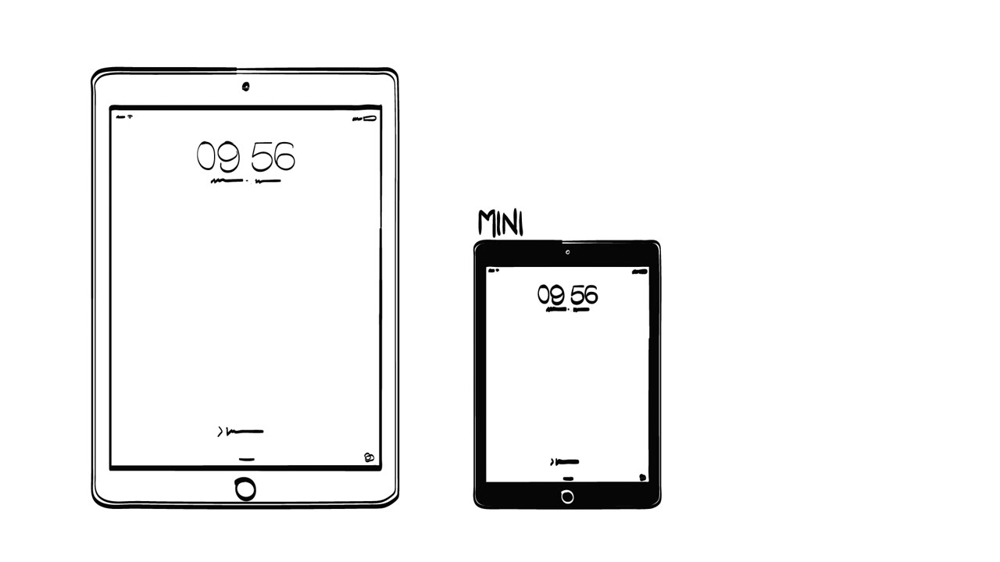
Case: Holland Container Innovations
The lecture illustrates customer discovery and customer validation with Holland Container Innovations (HCI), a startup established in 2008 by students from TU Delft. It began with a patented method to fold a standard 40-foot cargo container to one-third of its original volume. The students explored the market for customers to whom this would be a valuable advantage.

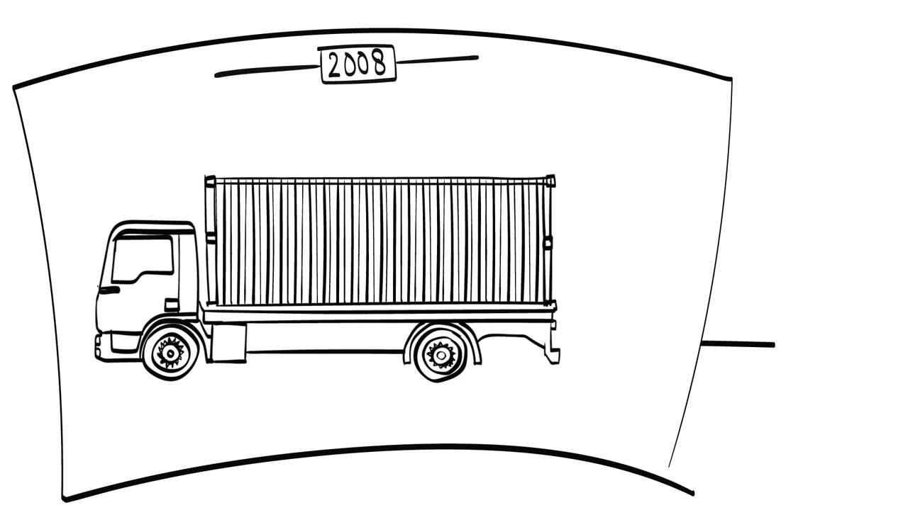

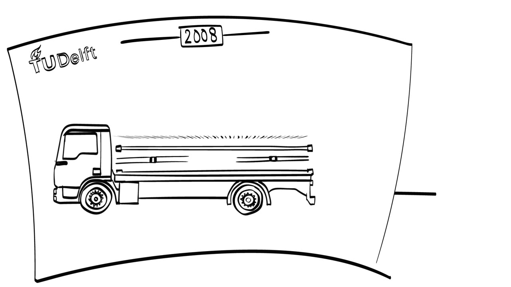
First the numbers
HCI first had to quantify what potential clients would gain from foldable containers, especially since these would cost more than regular ones. It developed a detailed business case for its target customers and used it to determine the appropriate price.
Then the pivot
Next HCI pivoted toward product-market fit. During this process it became clear that the patented technology was not the solution potential customers were looking for. Folding and unfolding took too much time, and there were concerns about the robustness of the process. The foldable container had to be re-engineered completely, which led to a new patent. The new container folds to only 25% of its original volume within one minute, and that matches the customer requirements.

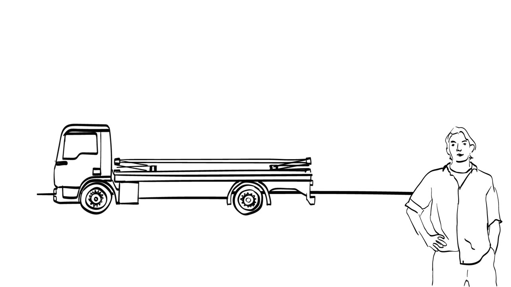
Notice the order. The quantified value proposition came before the actual product-market fit. If the potential financial gain to the customer is not big enough, adjusting the folding process to the customer's needs is a waste of time. The customer will never buy your container, however cleverly you designed it.

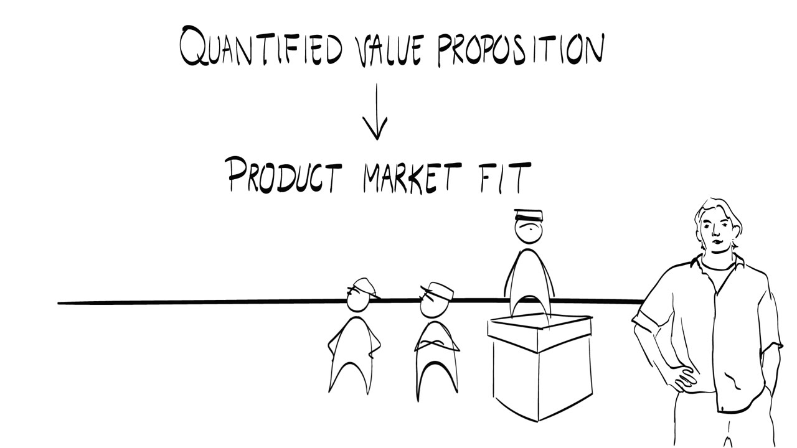
Three principles
In this lecture the solution was a product sold directly to a customer who is also the end user. Your business idea could just as well be a process or a service that provides a gain. The end user might not be the buyer, and the business model underneath can be more complicated than direct sales. Three main principles stay the same:
- The solution must match the problem perfectly.
- The pricing is not related to the cost price. It is related to the value of relieving the pain or providing the gain.
- The beachhead market must be sufficiently large and a precursor of an even bigger market in the future.

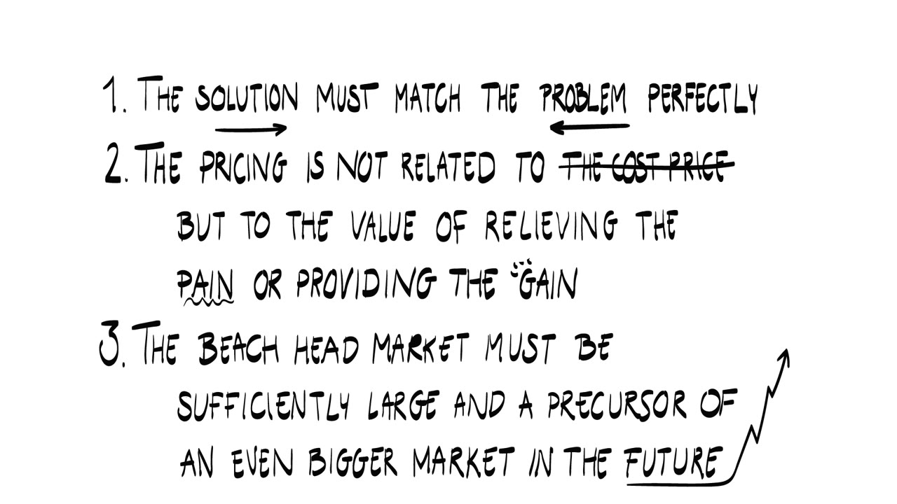
Terms to know
- Beachhead market
- A market segment in which customers are eager to buy your product and which foreshadows other market segments for the future.
- Persona
- A person who has all the demographic and social characteristics of a typical customer in the beachhead market.
- Pivoting
- The iterative process of adjusting the product specifications until they match the real customer needs.
- Product-market fit
- A good match between your product and what your customers expect of it. Pivoting is how you reach it.
- Total addressable market (TAM)
- The whole market you believe you have found. Only a fraction of it is willing to buy your product.
- Niche market
- A narrow segment away from the mainstream market. It can be highly profitable, but a broader segment is usually the better focus.
- Unique selling points
- What makes your solution special, and possibly worth extra money.
- Economies of scale
- The effect that drives the cost price down once the product is sold to the majority market.
- Quantified value proposition
- The customer's pain or gain expressed in money. It comes before product-market fit and sets the price.